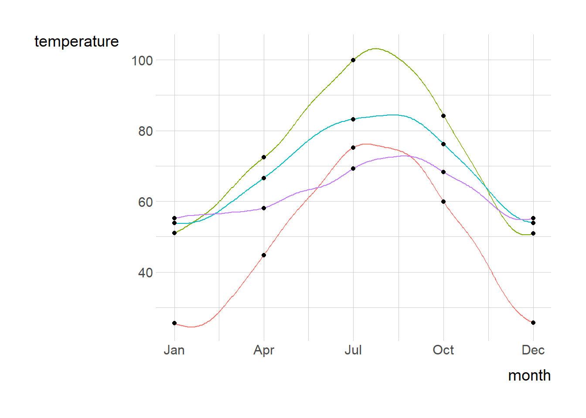
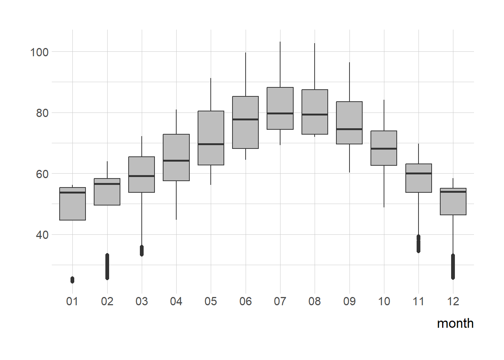
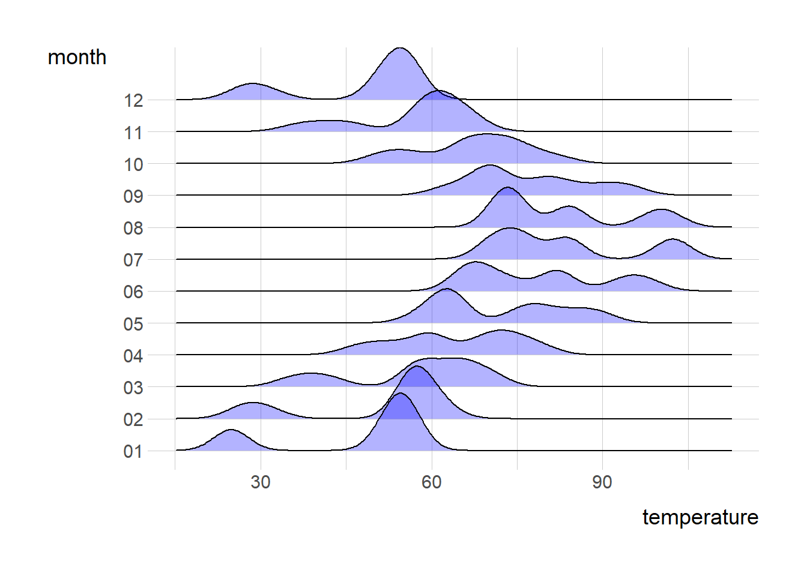
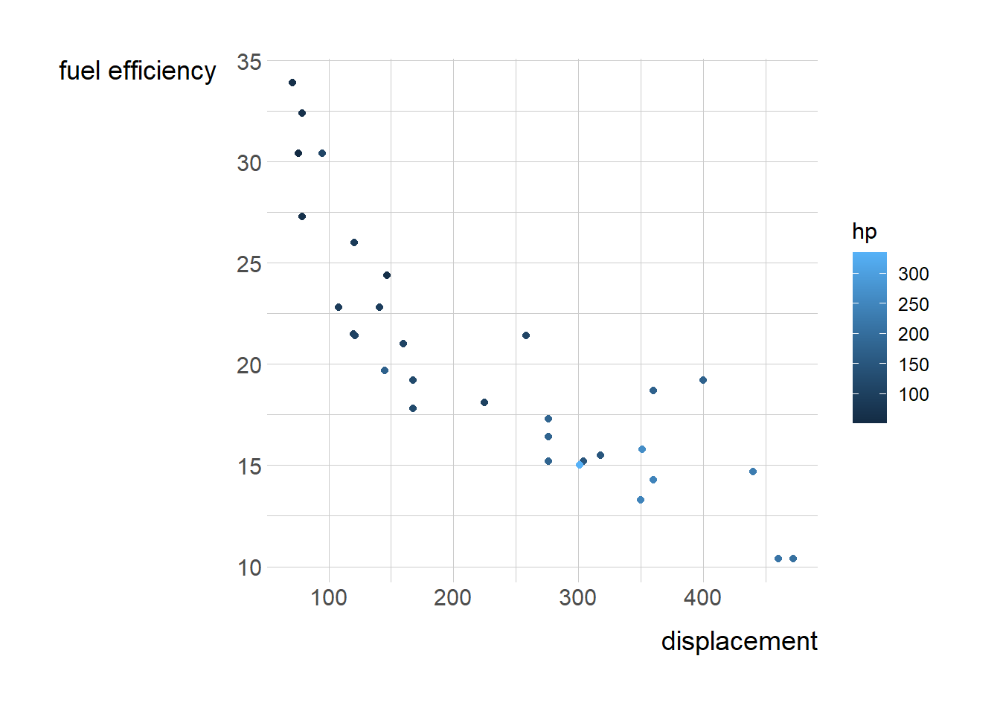
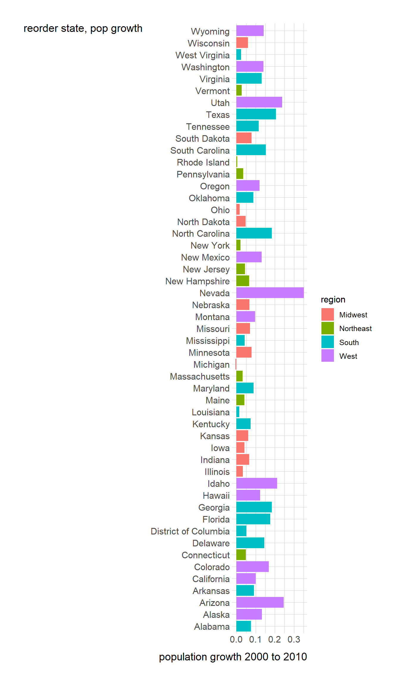

Code
ncdc_temp <- read_csv('https://bcdanl.github.io/data/ncdc_temp_cleaned.csv')Alexis Kruzicki
February 21, 2024
date_selected <- as.Date(c("0000-01-01", "0000-04-01",
"0000-07-01",
"0000-10-01",
"0000-12-31"
))
df <- filter(ncdc_temp, date %in% date_selected)
p <- ggplot(data = ncdc_temp,
mapping =
aes( x = date,
y = temperature ) )
p + geom_line( aes( color = location ),show.legend = F) +
geom_point(data = df) +
labs(x = "month") +
scale_x_date(breaks = date_selected,
date_labels = "%b")



# A tibble: 51 × 7
region division state pop2000 pop2010 popgrowth area
<chr> <chr> <chr> <dbl> <dbl> <dbl> <dbl>
1 Midwest East North Central Michigan 9938444 9883640 -0.00551 56539.
2 Northeast New England Rhode Island 1048319 1052567 0.00405 1034.
3 South West South Central Louisiana 4468976 4533372 0.0144 43204.
4 Midwest East North Central Ohio 11353140 11536504 0.0162 40861.
5 Northeast Middle Atlantic New York 18976457 19378102 0.0212 47126.
6 South South Atlantic West Virginia 1808344 1852994 0.0247 24038.
7 Northeast New England Vermont 608827 625741 0.0278 9217.
8 Northeast New England Massachusetts 6349097 6547629 0.0313 7800.
9 Midwest East North Central Illinois 12419293 12830632 0.0331 55519.
10 Northeast Middle Atlantic Pennsylvania 12281054 12702379 0.0343 44743.
# ℹ 41 more rows
---
title: "Flowers"
author: "Alexis Kruzicki"
date: "2024-02-21"
categories: [Flowers, code, analysis]
image: "image.png"
execute:
warning: false
message: false
toc: true
---
```{r}
#| include: false
library(knitr)
library(rmarkdown)
library(tidyverse)
library(skimr)
library(ggthemes)
library(hrbrthemes)
theme_set(theme_ipsum()+
theme(strip.background =element_rect(fill="lightgray"),
axis.title.x = element_text(angle = 0,
size = rel(1.5),
margin = margin(10,0,0,0)),
axis.title.y = element_text(angle = 0,
size = rel(1.5),
margin = margin(0,10,0,0))
)
)
```
```{r}
ncdc_temp <- read_csv('https://bcdanl.github.io/data/ncdc_temp_cleaned.csv')
```
```{r}
date_selected <- as.Date(c("0000-01-01", "0000-04-01",
"0000-07-01",
"0000-10-01",
"0000-12-31"
))
df <- filter(ncdc_temp, date %in% date_selected)
p <- ggplot(data = ncdc_temp,
mapping =
aes( x = date,
y = temperature ) )
p + geom_line( aes( color = location ),show.legend = F) +
geom_point(data = df) +
labs(x = "month") +
scale_x_date(breaks = date_selected,
date_labels = "%b")
```
```{r}
p_1 <- ggplot(data = ncdc_temp,
mapping =
aes(x = temperature,
y = month))
p_1 + geom_boxplot(
fill = "grey"
) +
labs(x = NULL) +
coord_flip()
```
```{r}
library(ggridges)
p <- ggplot(data = ncdc_temp,
mapping =
aes(x = temperature,
y = month))
p + geom_density_ridges(alpha = 0.3, fill = "blue")
```
```{r}
cars <- mtcars
c<- ggplot(cars, aes(disp, mpg)) +
geom_point(aes(color = hp))
c + labs(x= "displacement")+ labs(y= "fuel efficiency")
```
```{r}
popgrowth_df <- read_csv(
'https://bcdanl.github.io/data/popgrowth.csv')
popgrowth_df %>% arrange(popgrowth, state)
pg<- ggplot(popgrowth_df, aes(state, popgrowth, fill = region)) +
geom_bar(stat = "identity", position = "dodge") +
coord_flip()
pg + labs(y= "population growth 2000 to 2010")+ labs(x= "reorder state, pop growth")
```
```{r}
male_Aus <- read_csv(
'https://bcdanl.github.io/data/aus_athletics_male.csv')
ma<- ggplot(male_Aus, aes(x=height, y= pcBfat, group=sport)) +
geom_point(aes(shape=sport, color= sport))
ma + labs(x= "height(cm)")+ labs(y= "% body fat")
```
```{r}
titanic <- read_csv(
'https://bcdanl.github.io/data/titanic_cleaned.csv')
t <- data.frame(v1=rnorm(100),v2=rnorm(100,1,1),v3=rnorm(100,0,2))
data<- melt(titanic$age)
ggplot(titanic, aes(x=age, fill=sex)) + geom_density(alpha=0.25)
```
```{r}
cows_filtered <- read_csv(
'https://bcdanl.github.io/data/cows_filtered.csv')
t <- data.frame(v1=rnorm(100),v2=rnorm(100,1,1),v3=rnorm(100,0,2))
data<- melt(cows_filtered$butterfat)
ggplot(cows_filtered, aes(x=butterfat, fill=breed)) + geom_density(alpha=0.25)
```